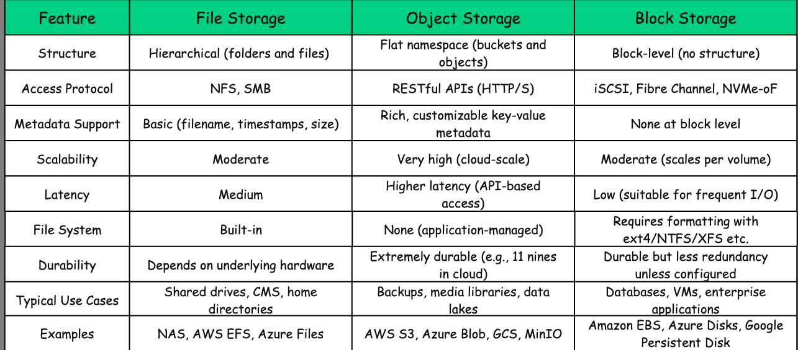

Storage Types
1) READ HOW FILES ARE READ
2) HOW FILE STORED AND IMAGES
Resource https://blog.algomaster.io/p/file-vs-object-vs-block-storage

- File Storage
File storage is the most traditional and widely used storage paradigm.
It mirrors the way data is organized on a personal computer: data is stored in files, files are grouped into folders, and folders are arranged in a hierarchical directory structure.
This layout is intuitive and familiar, which makes file storage easy to manage for both users and applications.
Each file comes with associated metadata, such as:
File name
Size
Permissions (read, write, execute)
Timestamps (created, modified, accessed)
Optional user-defined tags
Files are typically accessed via network protocols like:
NFS (Network File System) – commonly used in Unix/Linux environments
SMB (Server Message Block) – commonly used in Windows environments
Visualization
Each user or team has their own folder
Files are referenced by absolute paths (e.g., /users/alice/photo.jpg)
Permissions can be applied at the file or folder level
How It Works
Behind the scenes, file storage is powered by a centralized or distributed file server.
Here's a step-by-step breakdown of how it works:
Client Mounts the File System
Clients connect to the storage system using NFS or SMB.
The remote file system appears just like a local drive.
Uniform Directory View
Every client sees the same shared directory structure.
Changes made by one client are visible to all others in real time.
File Access via Paths
Files are accessed using fully qualified paths, e.g., /team/design/logo.png.
Concurrency with Locking
File-level locking is used to manage concurrent access.
This prevents conflicts when multiple users try to read or write the same file.
Common Implementations
On-premise: NAS (Network Attached Storage) systems
Cloud-based: AWS EFS (Elastic File System), Azure Files, Google Filestore
Advantages
- Simplicity and Familiarity
The hierarchical structure of folders and files is intuitive and easy to navigate. Most users are already familiar with this model from their personal computers, reducing the learning curve. 2. Shared Access
File storage is excellent for environments where multiple users need to access and collaborate on the same set of files. It works well over local area networks (LANs), enabling centralized access and control. 3. Versatility
This model supports a wide range of use cases from storing personal documents to powering shared drives and internal tools within large organizations. Limitations
- Limited Scalability
As the number of files and folders increases, especially in deeply nested directory trees, performance can degrade. File lookups become slower, and managing permissions or structure gets more complex. 2. Basic Metadata
File systems typically support only limited metadata: filename, file size, timestamps, and basic permissions. Unlike object storage, there's little support for custom or application-specific metadata. 3. Protocol Overhead
Protocols like NFS and SMB introduce additional overhead, especially over wide area networks (WANs). This can lead to latency and reduced throughput when accessed remotely. Best Use Cases
File storage is well-suited for scenarios where:
A familiar file/folder structure is needed
Multiple users or applications need to share access to the same files
Fine-grained file-level access control is required
Examples Use Cases:
Shared drives for enterprise teams to collaborate on documents, spreadsheets, and media assets
Source code repositories and build artifacts in software development environments
Content Management Systems (CMS) that organize files in structured directories
Centralized log file aggregation for analysis and monitoring
- Object Storage
Object storage is a modern, cloud-native storage architecture built for massive scalability, high durability, and flexibility.
Unlike traditional file or block storage, it does not organize data into folders or fixed-size blocks. Instead, it treats each unit of data as a self-contained object stored in a flat namespace.
Every object in an object storage system consists of three parts:
Data: The actual content. This could be an image, video, document, log file, or any other binary/text payload.
Metadata: Customizable key-value pairs that describe the object. These can include:
Content-Type: image/jpeg, text/plain, etc.
Author, User-ID, Geo-Location, App-Version, etc.
System-generated metadata like creation timestamp or object size.
Object Identifier (Object Key): A globally unique identifier for each object, often a UUID or a hash of the content. This key is used to retrieve the object via an API call.
Visualization
All objects exist within buckets, which act as logical containers.
There is no directory hierarchy. All objects are stored in a flat namespace.
How Object Storage Works
Storage Structure: Objects are stored inside buckets, but the structure is flat, not hierarchical. There is no concept of folders.
Accessing Objects: Objects are accessed via HTTP REST APIs using commands like GET /bucket-name/object-key.
Metadata Flexibility: Unlike file storage, object storage allows extensive and customizable metadata, enabling powerful search, categorization, and access control.
Popular Implementations
AWS S3
Google Cloud Storage (GCS)
Azure Blob Storage
MinIO
Advantages
- Infinite Scalability
Object storage is designed to scale horizontally without limit. Whether you're storing a few hundred files or billions of objects, the architecture remains consistent and efficient. 2. High Durability and Availability
Cloud-based object stores like AWS S3, Azure Blob, and GCS offer up to 99.999999999% (11 nines) durability by automatically replicating data across multiple availability zones. 3. Cost-Effective
With tiered storage options (standard, infrequent access, archive), object storage can optimize costs by automatically moving data based on access patterns and lifecycle policies. Limitations
- Higher Latency
Object storage is not suitable for latency-sensitive applications. Accessing data over REST APIs introduces more overhead compared to direct file or block-level I/O. 2. Not Ideal for Small, Frequent Updates
Because objects are immutable and must be replaced in full to modify content, it's inefficient for workloads that require frequent partial updates (e.g., databases or real-time log writes). 3. No File System Semantics
Object storage lacks traditional file system features like hierarchical directories, file locking, and POSIX compliance. Best Use Cases
Object storage is best suited for use cases where:
You need to store large volumes of unstructured data
Scalability and durability are top priorities
Applications interact via HTTP APIs or SDKs
Traditional file system features are not required
Examples Use Cases:
Cloud-native apps storing user-generated content like images, videos, or documents
Data lakes for analytics, machine learning, or big data processing
Backup and archival of enterprise data with cost-effective lifecycle policies
Content delivery via CDN integration (e.g., serving static assets from S3)
What is the difference between Object Storage and Blob Storage?
The terms Object Storage and Blob Storage are often used interchangeably, but there's a subtle distinction rooted in context and terminology rather than fundamental technology.
"Blob" stands for Binary Large Object. It's a type of object storage, specifically the one offered by Microsoft Azure.
Think of Blob Storage as Microsoft’s branded flavor of Object Storage, much like S3 is Amazon’s implementation of object storage. 3. Block Storage
Block storage is a high-performance, low-latency storage paradigm where data is divided into evenly sized chunks called blocks, each identified by an address.
Unlike file or object storage, block storage doesn't manage files, folders, or metadata. It focuses solely on storing and retrieving blocks of raw data.
You can think of block storage as a blank hard disk in the cloud. Before using it, you must attach it to a server, format it with a file system (like ext4, NTFS, or XFS), and then manage files and folders at the operating system level. Visualization
The OS sees a storage volume (like /dev/sda)
It mounts and formats it with a file system
File system maps files to underlying blocks
No folder or object logic is stored at the block level
How Block Storage Works
Data Chunking: Data is split into fixed-size blocks (usually 512 bytes or 4 KB).
Address Assignment: Each block is assigned a logical block address (LBA), like a page number.
I/O Operations: The OS or application sends read/write requests using the block’s address and offset.
No Native Structure: Block storage does not understand files, folders, or metadata. All organization is handled by the mounted file system layered on top.
Seen as a Local Disk: Even though the storage may reside in a remote data center or cloud provider, the operating system treats it like a physically attached disk.
Popular Implementations
Amazon EBS (Elastic Block Store)
Azure Managed Disks
Google Persistent Disks
Advantages
- High Performance and Low Latency
Block storage delivers fast, predictable I/O performance. It's ideal for workloads that require frequent, random access to small chunks of data—such as databases or boot volumes. 2. Fine-Grained Control
Because block storage operates at the disk level, you have full control over how data is structured and managed via the file system you choose (e.g., ext4, NTFS, XFS). 3. Consistent Throughput
Block devices provide consistent read/write throughput, making them suitable for mission-critical applications with high IOPS (Input/Output Operations Per Second) requirements. Limitations
- No Native Metadata or Structure
Block storage does not inherently understand files, folders, or object metadata. All file-level organization must be handled by the file system on top. 2. Not Easily Shareable
A single block volume is typically attached to only one compute instance at a time. While some platforms support multi-attach, it introduces synchronization challenges. 3. Less Scalable Compared to Object Storage
Block storage scales vertically (adding more or larger volumes), whereas object storage scales horizontally (adding more objects and buckets), making it less ideal for massive unstructured datasets. Best Use Cases
Block storage is best suited for use cases where:
High IOPS and low-latency disk access are essential
The application expects a traditional file system and disk interface
Data must be structured and controlled at a low level
The storage volume is tightly coupled with a single host or instance
Example Use Cases:
Relational databases like MySQL, PostgreSQL, or Oracle requiring fast random reads/writes
Virtual machine boot disks and root volumes in cloud environments
High-performance computing (HPC) systems and workloads with intense disk I/O
Containers running stateful applications with persistent volume claims
Quick Comparison Table Choosing the Right Storage
There’s no one-size-fits-all storage solution. The best option depends on your specific use case, performance requirements, access patterns, and scalability goals.
Here’s a breakdown of when to use file, object, or block storage. Scenario 1: Hosting a Website with Large Media Files
Recommended: Object Storage
Easily stores and serves static assets like images, videos, and documents
Scales automatically with demand
Integrates well with CDNs and HTTP-based delivery
Cost-effective with tiered storage (standard, infrequent, archive)
Scenario 2: Running a High-Performance Relational Database
Recommended: Block Storage
Delivers low-latency access and high IOPS
Allows fine-grained file system control
Ideal for structured, transactional data with frequent reads/writes
Common choice for MySQL, PostgreSQL, Oracle, etc.
Scenario 3: Setting Up a Shared Drive for a Team
Recommended: File Storage
Supports hierarchical structure for organizing documents
Familiar and easy to use for non-technical users
Allows file-level access control and sharing
Useful for internal drives, design teams, and user directories
Scenario 5: Hosting Virtual Machines or Container Workloads
Recommended: Block Storage
Treated as virtual disks by OS or container orchestrators
Suitable for persistent volumes in Kubernetes or Docker
Provides fast, consistent throughput and storage isolation
Scenario 6: Building a Content Management System (CMS)
Recommended: File or Object Storage (depends on scale)
Use file storage for smaller-scale internal CMS with shared folders
Use object storage for scalable web apps handling lots of media and documents
USE THE FILE STORAGE TYPE
Got it 👍 The image you shared shows different access protocols used in storage systems. Let me elaborate on each one in detail from a system design / DevOps perspective:
1. NFS & SMB (File-level access protocols)
NFS (Network File System)
- Developed by Sun Microsystems, commonly used in Unix/Linux environments.
- Provides shared file system access over the network.
- Applications see files and directories as if they are on a local disk.
- Used in NAS (Network Attached Storage) systems.
SMB (Server Message Block)
- Developed by Microsoft, mostly used in Windows environments.
- Also provides file-level access over the network.
- Allows sharing of files, printers, and serial ports.
- Modern versions are SMB 2.0/3.0 (used in Azure Files).
✅ Use case: File sharing, user home directories, collaboration, content management systems. ⚠️ Limitations: Performance overhead for metadata operations (file lookups, permissions).
2. RESTful APIs (HTTP/S) (Object-level access protocols)
- Object storage systems (e.g., Amazon S3, Azure Blob, Google Cloud Storage) are accessed via REST APIs over HTTP/HTTPS.
- Data is stored as objects (metadata + binary blob), not files or blocks.
- Each object is addressed via a unique identifier/URL.
- CRUD operations: PUT, GET, POST, DELETE.
✅ Use case: Cloud-native apps, backups, big data analytics, logs, media streaming. ⚠️ Limitations: Higher latency compared to block/file; not suitable for low-latency databases or boot volumes.
3. iSCSI, Fibre Channel, NVMe-oF (Block-level access protocols)
iSCSI (Internet Small Computer Systems Interface)
- Encapsulates SCSI commands over TCP/IP.
- Provides block-level storage to servers.
- Common in data centers for SAN (Storage Area Networks).
Fibre Channel (FC)
- High-speed network (16/32/64 Gbps) dedicated for storage.
- Provides low-latency, high-throughput block storage.
- Used in enterprise SAN environments.
NVMe-oF (NVMe over Fabrics)
- Extends NVMe protocol across network fabrics (Ethernet, InfiniBand, Fibre Channel).
- Designed for ultra-low-latency and high-performance workloads.
- Popular in modern AI/ML, HPC, database workloads.
✅ Use case: Databases, VMs, transactional systems, high-performance apps. ⚠️ Limitations: More complex to manage, costlier (esp. Fibre Channel).
🔑 Summary by Protocol Type:
- File-level (NFS, SMB): Shared files, collaboration, general-purpose storage.
- Object-level (RESTful APIs): Cloud-native, scalable, metadata-rich storage.
- Block-level (iSCSI, FC, NVMe-oF): High-performance apps, databases, SANs.
👉 Would you like me to create a comparison table (File vs Object vs Block storage protocols) with advantages, disadvantages, and real-world examples (AWS, Azure, GCP services)?